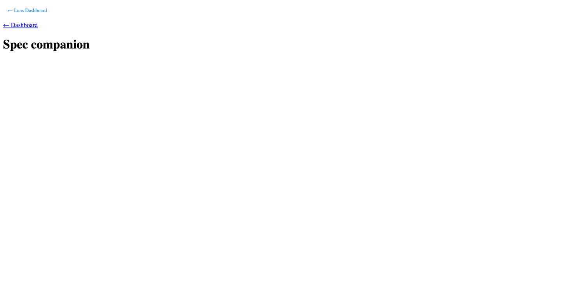
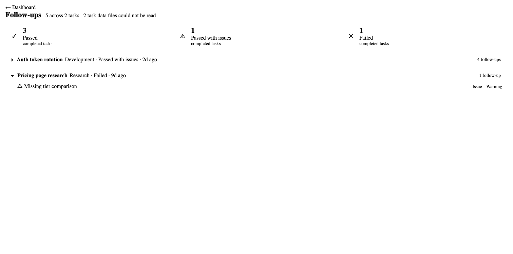
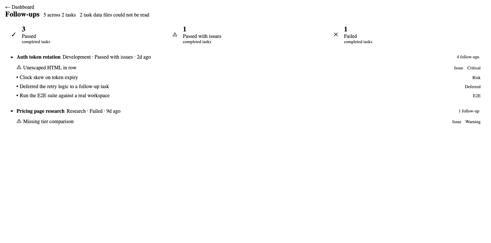
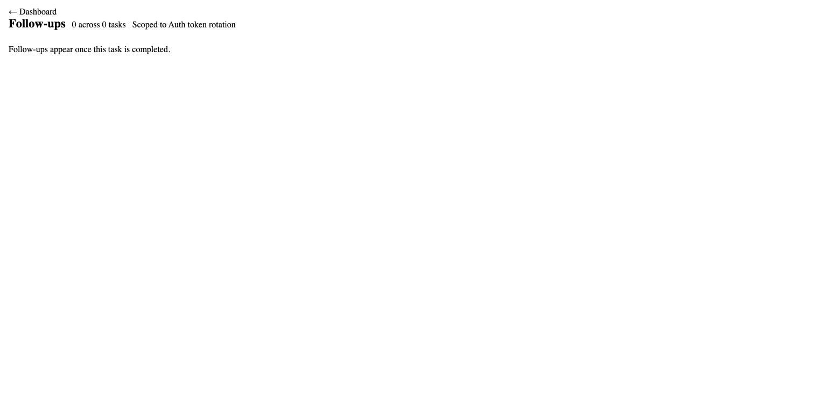
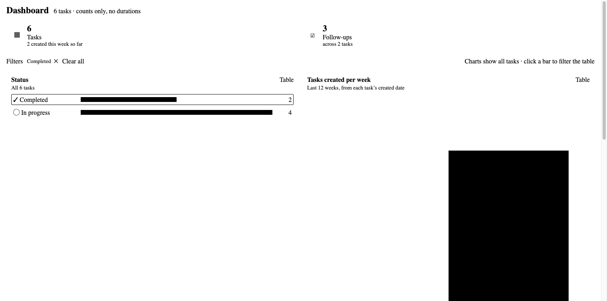

4.1 Hosted companion shim + native link ✅ Passed
The button text is ← Lens Dashboard. Clicking it posts {type:'openDashboard'}, and the native link posts {type:'navigate', href:'../dashboard.html'}. The button has no aria-label (see C1).

4.2 Follow-ups view + expanders ✅ Passed
The verdict breakdown reads 3/1/1. There are 2 task groups with follow-up counts. Source chips are Issue, Risk, Deferred and E2E, and the severity chip (Critical, Warning) appears on issues only. The notice says 2 task data files could not be read. The first expander collapses the list (aria-expanded=false, 1 of 5 items visible) and expands it again (true, 5 of 5).



4.3 Scoped non-completed empty state ✅ Passed
The view shows "Scoped to Auth token rotation" and "Follow-ups appear once this task is completed."

4.4 Dashboard Follow-ups tile ✅ Passed
The tile shows ☑ 3, Follow-ups, across 2 tasks. Clicking it posts {type:'openFollowUps'}.

Discrepancies
cosmeticC1: FR1 says the new string is also used for the aria-label. The button has none, and the nav keeps aria-label="Breadcrumb" (src/webview/shim.ts:238). This has no practical impact. The fix is to add the aria-label or to relax the spec wording.
Console: the only error was a favicon.ico 404 from the test server.
Conclusion
✅ GO: merge. C1 is a nice-to-have.